Đây là nơi mình post những build mà mình nghĩ ra/tìm ra và điều tra 🕵️. Sẽ cố gắng update theo patch mới nhất
Mục đích của trang này không phải để chỉ người đọc build nào đúng/sai, mà là để gợi cho mọi người suy nghĩ về 2 điều sau:
- Critical thinking - Tư duy phản biện: Mình không viết cái này để thay thế OPGG/blitz.gg/Mobalytics... Mình viết để khiến các bạn SUY NGHĨ. Suy nghĩ xem nó viết đúng hay sai, trong tình huống nào thì áp dụng được, còn tình huống nào thì phải làm khác đi.
- Intent - Ý định: Tất cả các build trong đây được xây dựng từ bản chất của tướng và cách vận hành tướng trong game, theo ý kiến chủ quan của mình. Tất nhiên, ý kiến của mình có thể đúng/sai, nhưng điều mình nhấn mạnh ở đây là ý định, thứ mình giải thích rất rõ trong từng build.
Không chỉ riêng việc chọn ngọc, mua đồ, tất cả hành động của mỗi người trong game (và ngoài đời :D) đều phải có nguyên nhân, kế hoạch đi kèm.
Người đọc có thể không đồng ý với tất cả mọi thứ được viết trong trang này. Tuy vậy, mình tin là ai đọc xong cũng sẽ học được 1 điều gì đó mới <3
LƯU Ý:
13.10 sẽ là 1 trong những bản lớn nhất từ trước đến giờ, thay đổi game hoàn toàn. Tất cả các build liên quan đến AD, hỗ trợ và sát thủ AD đều sẽ không còn chính xác. Mình sẽ chỉ cập nhật lại trang này sau khi đã hiểu rõ hết các thay đổi.
Một số thuật ngữ tiếng Anh:
MS (Movement speed): tốc độ di chuyển engage: mở giao tranh, lao vào,... battlemage: Các tướng pháp sư tầm ngắn, nhiều máu. VD: Ryze, Swain, Sylas, Cassiopeia,... burst: dồn dmg trong thời gian ngắn, thường hay dùng để phân biệt với DPS (dmg theo thời gian dài) AS: tốc độ đánh
Mục lục
Akali 13.8
Bảng ngọc
Ở đây mình dùng các bảng tiêu biểu thôi. Thực tế thì ngọc của Akali có nhiều chỗ tuỳ biến theo game, nên các bạn lấy bảng nào mình chơi tốt là được.
Item
Mình không có vấn đề gì với các build hiện tại của Akali. Đây chỉ là ý tưởng của mình khi xem Akali đi lane.
Akali có base dmg cơ bản rất cao. Nếu đã từng đánh với Akali đi top, các bạn sẽ biết Akali có thừa dmg để solokill từ lv6 (nếu Akali trúng hết chiêu, và bạn không chơi tank).
Vào midgame, Akali cũng không cần quá nhiều AP để dứt điểm 1-2 người mỗi combat. Chính vì vậy, build của mình tập trung vào Xuyên kháng phép và các chỉ số tank.
Các core item trong hình cho Akali ~43 xuyên kháng phép, 1k HP, 30 giáp và kháng phép, giúp Akali vừa gần như gây sát thương chuẩn trên tướng yếu máu, vừa quá trâu để hạ gục trong combat.
Về cuối trận, có thể bổ sung thêm AP với Mũ Phù Thuỷ, Trượng Hư Vô hoặc mua thêm Đồng hồ cát, Mũ Trụ Nguyền Rủa để càng khó chết hơn.
Mình ưu tiên Ngọn đuốc thánh quang do đây là món đồ đỡ nhất trong 4 món tank. Tuỳ theo meta, chúng ta lựa món tank nào tốt nhất là được.
Annie 13.8
LCK là khu vực đầu tiên chơi Annie, và tất cả khu vực khác copy build Trượng Trường Sinh từ đây.
Mình rất ghét build này, vì nó biến Annie thành Battlemage, lối chơi không phù hợp và chưa bao giờ xuất hiện trên Annie trong các mùa trước.
Bảng ngọc
2 bảng tương ứng với 2 cách lên đồ được giải thích ngay bên dưới.
Item
Permaburn
Dùng cho các đội hình nhiều máu, không thể burst. Aura của Tibbers làm chậm tất cả kẻ địch xung quanh, và Tibbers liên tục apply Liandry, Thiên thạch Bí ẩn, Phát bắn đơn giản trên tất cả các tướng đứng xung quanh. Tibbers gây dmg liên tục khiến Thiên thạch Bí ẩn hồi chiêu rất nhanh, kích hoạt càng nhiều thiên thạch hơn.
Burst
Đơn giản là mua nhiều AP/xuyên kháng phép nhất có thể để combo ám sát. Nếu bạn biết cách kiểm soát mana, có thể thay thế Luden bằng Đai tên lửa Hextech để dễ engage hơn, tạo yếu tố bất ngờ. Đương nhiên, build này hoạt động tốt nhất với các tướng yếu máu. Thay Sốc điện bằng Thú săn mồi khi cần thêm MS để engage.
Luôn luôn mua Giày Pháp sư !!!. Annie không quan tâm, không sử dụng hiệu quả được giày nào khác.
Bel'Veth 13.8
Bel'Veth có tương tác rất mạnh với Hút máu. Đây là yếu tố được tập trung nhiều nhất trong build của mình.
Bảng ngọc
Lấy Sẵn sàng Tấn công nếu cần thêm dmg cho early game. Tuyệt đối không bao giờ lấy Chinh phục. Lấy ngọc này trên Bel'veth đồng nghĩa với troll.
Bel'veth cần Bó tên ánh sáng và Huyết trượng để farm hiệu quả. Mình lựa nhánh phụ Cảm hứng để giúp Bel'veth mua được các trang bị thành phần này nhanh hơn.
Có thể thay Thị trường Tương lai bằng Thấu thị Vũ trụ để hồi Flash nhanh hơn. Flash là một trong những cách duy nhất giúp Bel'veth sống sót qua early game.
Item
Gươm Suy Vong là item cung cấp nhiều dmg nhất cho Bel'veth.
Các build của Bel'veth từ lúc ra mắt cho đến nay đều đi kèm một vài món tank. Build này đơn giản là thay thế các chỉ số chống chịu từ những món tank bằng Hút máu và khiên. Nỏ tử thủ và Huyết kiếm cung cấp rất nhiều chỉ số quan trọng trong build này dành cho Bel'veth. Giáp tâm linh tương tác rất mạnh với build này, chỉ cần đối phương có 1 AP là có thể lên được.
Bel'Veth Support 13.9
Bel'Veth hiện tại hoàn toàn có thể chơi ở vị trí hỗ trợ. Ở bản 13.10, Bel'Veth hỗ trợ sẽ càng mạnh hơn.
Bảng ngọc
Ở vị trí hỗ trợ, luôn luôn lấy Sãn sàng tấn công để tăng dmg cho cả bản thân và AD. Có thể đổi sang Giáp cốt nếu muốn chơi theo kiểu all-in.
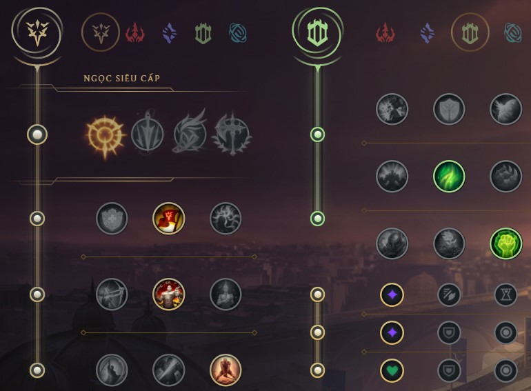
Item
Vai trò của Bel'Veth ở vị trí hỗ trợ là sử dụng khả năng cơ động của mình để mở giao tranh bằng W, hút sát thương với E và thoát ra ngoài. Độ cơ động là sự khác biệt lớn nhất giữa Bel'Veth hỗ trợ so với Leona, Nautilus, Thresh,...
90% game lên Giáp vai Nguyệt thần, mua Solari chỉ khi có giá trị counter các tướng đối phương (Ví dụ: Karthus, Gankplank, Fiddlesticks,...).
Ưu tiên các món tốc độ chạy sau đồ thần thoại. Nếu quá xanh trong giai đoạn đi lane, có thể lên Rìu đen để bổ sung thêm dmg cho team.
Caitlyn 13.8
Nguồn cảm hứng chính cho build này là duoking1 (NA), một người chơi có rất nhiều kiến thức về đường dưới.
Bảng ngọc
Mặc định lấy Nhịp độ chết người, chỉ lấy Bước chân thần tốc với mục đích huỷ diệt các lane yếu.
Những bạn chưa quen chơi Cait nên chọn Hiện diện Trí tuệ, nhưng nên từ từ tập kiểm soát mana để sử dụng được Hồi máu vượt trội
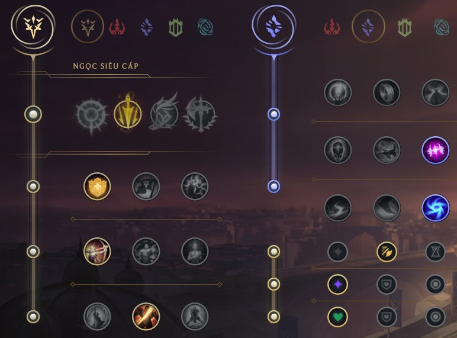
Item
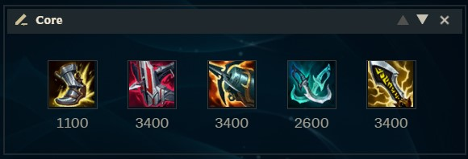
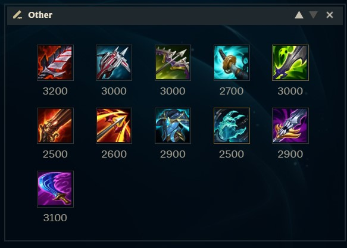
Nỏ tử thủ là đồ thần thoại mạnh nhất cho Caitlyn, phù hợp với tất cả các yếu tố trong lối chơi của Caitlyn (di chuyển chậm, thả diều, di chuyển nhanh combo 2-3 skill, chống one-shot, hút máu đè lane,...). Đổi sang Móc diệt thuỷ quái khi cần thêm dmg giết tank. Đổi sang Cung phong linh khi cần quay highlight/montage combo Caitlyn oneshot 30 nút (làm ơn đừng lên món này).
Tương tự là Ma vũ song kiếm, cung cấp nhiều MS nhất, DPS chỉ thua Vô cực kiếm, cực kỳ phù hợp với tất cả điểm mạnh, điểm yếu của Caitlyn.
Chogath Battlemage 13.8
Một trong số ít tướng có khả năng Quadra flex.
Bảng ngọc
Thú săn mồi là cách để engage trên các tướng đánh xa. Combo Thú săn mồi + Trượng băng vĩnh cửu sẽ cho bạn rất nhiều cơ hội solokill.
Có thể đổi hàng dưới cùng thành Thợ săn tối thượng
Nếu đối phương có nhiều melee, chuyển sang dùng Mưa kiếm để dồn dmg bằng E.
Khoảng 1 tháng trước, Gumayusi có chơi Cho'gath đường dưới bằng Thiên thạch Bí ẩn. Nghe có vẻ hợp lý, nhưng thực sự rất troll, vì Thiên thạch không có giá trị gì trong lane và sau early game.
Item
Trượng băng vĩnh cửu: Setup cho Q để solokill tướng yếu máu. Lưu ý tầm sử dụng không quá dài, nên nếu gặp nhiều tướng đánh xa thì nên kết hợp Thú săn mồi. Trượng trường sinh: Đáng cân nhắc nếu team mình không có quá nhiều tank. Bạn sẽ là mục tiêu số một do kích cỡ tướng lớn và rất chậm. Lên kèm với các món tank, đặc biệt là Thú tượng thạch giáp. Kính ngắm ma pháp: Item này tăng dmg cho cả sát thương chuẩn.
Corki 13.8
Corki có 2 build, nhưng nhiều người hiện mặc định lên 1 build duy nhất. Mình viết bài này để phân biệt các ưu, nhược điểm của cả 2 build.
Bảng ngọc
Đòn phủ đầu là ngọc then chốt số 1 của Corki. 1 điều đáng tiếc là các ngọc phụ của nhánh Cảm hứng quá yếu. Thợ săn tối thượng cực kỳ quan trọng cho build poke.
Với build crit, dùng nhánh Kiên định để có thêm chống chịu, hoặc nhánh Pháp thuật để có thêm AD.
Item
Poke
Rất tốt khi đối đầu với nhiều tướng đánh xa. Một điểm hay gây hiểu nhầm cho nhiều người chơi Corki là build này cần AP.
Tooltip của R ghi rất rõ rằng R scale với 15/45/75% AD (lv6/11/16), và scale với chỉ 12% AP ở mọi cấp. R của Corki gây sát thương phép, nhưng gây dmg tốt hơn khi Corki mua AD. Lý do chúng ta mua một vài món đồ AP trên Corki là vì Xuyên kháng phép, vì game gần như không có một món AD nào cho chỉ số này cả. Chuỳ gai Malmortius và Vũ điệu Tử thần là 2 món đồ thủ tốt nhất cho Corki.
Trước đây, mình từng nghĩ không có lý do gì phải lên Liandry cho Corki, vì nếu gặp tướng nhiều máu thì có thể build Crit. Nhưng ở mùa 13, Trượng trường sinh cho các pháp sư quá nhiều máu, nhiều đến mức Liandry bắt đầu gây nhiều dmg hơn Luden. Đây là đồ thần thoại khi bạn gặp Ryze, Anivia, Cassiopeia, Orianna,... lên Trượng trường sinh. Lưu ý: khi mua Luden, thứ tự mua thành phần đúng là Lam ngọc -> Bí chương thất truyền -> Gậy bùng nổ. Ngay cả Faker cũng mua sai :P.
Crit
Dmg đánh thường cao, thích hợp khi cần gây DPS lên các tướng melee, trâu bò. Khi các tướng tank có khoảng 3k HP và 150 kháng phép, build poke bắt đầu yếu đi và không còn đóng góp nhiều trong combat. Build trên hình hiện tại là combo item có DPS cao nhất cho Corki.
Ezreal 13.8
Có cảm giác như cứ hết 1 quý thì tất cả những người chơi Ezreal sẽ thay đổi build 1 lần cho nó mới lạ. Bài này tổng hợp nhiều build của Ezreal và điểm mạnh, điểm yếu của chúng.
Bảng ngọc
Mặc định là Chinh phục. Nếu build tập trung nhiều vào đánh thường thì có thể đổi sang Sẵn sàng tấn công.
Nhiều người sử dụng nhánh phụ Áp đảo để lấy Thợ săn tài tình, giảm hồi chiêu Thuỷ kiếm. Điểm yếu của nhánh này là cần có mạng đầu game để stack. Theo mình, nhánh Pháp thuật vẫn ổn định nhất.
Item
Đoản đao Navori: Một trong những item OP nhất sau khi được tân trang lại.
Bởi vì tương tác quá mạnh giữa Ezreal và Navori, mình tin rằng Ezreal không cần phải lên Nước mắt cũng như Manamune nữa, để nhường chỗ cho Lưỡi hái linh hồn. Đây sẽ là combo chính trong tất cả các build được giới thiệu ở đây.
Crit
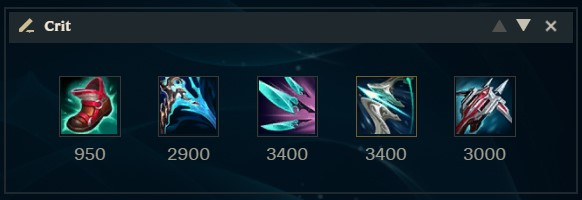
Phù hợp cho các game nhiều melee/tank, tận dụng thêm các đòn đánh thường, so le với Q.
Sát lực
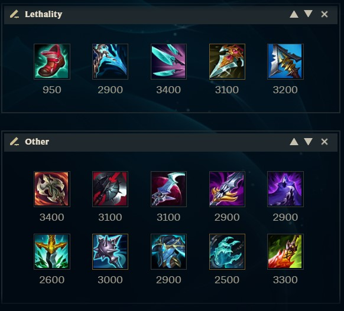
Build gây nhiều dmg nhất trên Q. Dùng build này khi bạn chỉ poke trong combat.
Móng vuốt ám muội gây nhiều dmg hơn Nguyệt đao trên các tướng từ ~110-120 giáp trở xuống, mặc định lên trong mọi game.
Rất nhiều người thắc mắc rằng làm sao Ezreal kích hoạt được Móng vuốt. Câu trả lời là không :).
Chúng ta không mua item này để kích hoạt, mà mua bởi vì nó có nhiều sát lực nhất game. Và làm ơn đừng bao giờ mua Dạ kiếm Draktharr trừ khi chơi ARAM.
Liandry (???)
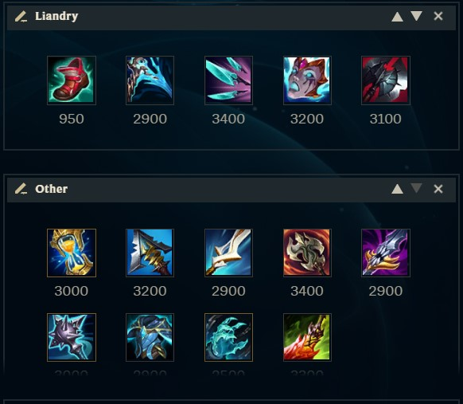
Trong soloQ, đôi lúc team pick một đội hình full AD. Đây là tình huống đặc biệt, và cũng là duy nhất, để chúng ta sử dụng Liandry, đa dạng hoá nguồn dmg trong đội hình. Đương nhiên, các món Xuyên giáp, Sát lực như Serylda sẽ yếu hơn trong build này.
Bởi tình huống trong game là team nhiều AD, bạn có thể lên cả Rìu đen để giảm giáp, giúp tăng dmg cho cả team.
Tam hợp kiếm
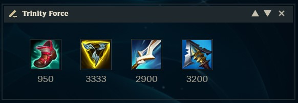
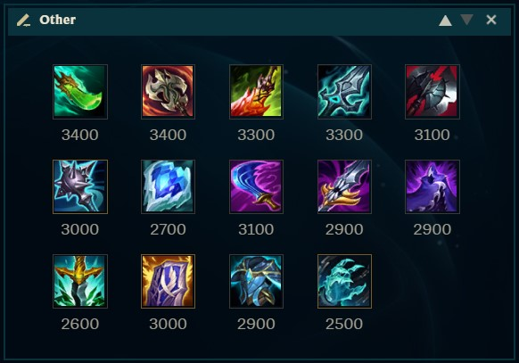
Sử dụng Tam hợp kiếm đồng nghĩa với chuyện bạn không thể mua Navori, đổi lại thì chúng ta sẽ có thêm HP, chỉ số mà build Navori gần như không thể có cho đến ít nhất là món 5. Build này tốt khi gặp đội hình nhiều tuóng lao vào. Ví dụ như Kennen, Viego, Ahri.
Có thể mua Gươm Suy Vong khi gặp các tướng tank lên Trái Tim Khổng Thần.
Graves 13.8
Bảng ngọc
Bước chân thần tốc là ngọc then chốt ổn định nhất cho cả Graves đi lane và đi rừng. Nếu bạn chơi Graves sát lực, có thể thay thế bằng Sốc điện hoặc Đòn phủ đầu.
Do game hiện tại đặt nặng việc kiểm soát mục tiêu, mình đánh giá rất cao Thuỷ thượng phiêu, không chỉ cho Graves mà hầu như tất cả các tướng đi rừng.
Với các build không phải Sát lực, có thể cân nhắc nhánh Kiên định để lấy chống chịu miễn phí.
Item
Do cơ chế reload, Graves không nên lên quá nhiều AS. Các bạn có thể thấy mình không đề xuất Giày cuồng nộ trong build nào cả. Nếu như cả Tabi và Giày thuỷ ngân đều không phù hợp, có thể giữ Giày 1 và ưu tiên lên đồ lớn.
Mọi người sẽ thấy sự vắng mặt của một trong những món đồ phổ biến nhất trên Graves, Kiếm Âm u. Theo mình, item này ngoài tương tác khá mạnh với Mắt thây ma thì không có nhiều tác dụng lắm. Chỉ số của Kiếm âm u quá yếu, và tất cả các build của Graves đều cần khoảng 2 item để bắt đầu mạnh. Nếu như đã quen mua Kiếm âm u thì các bạn có thể mua, nhưng mình cực kỳ không khuyến khích.
Sát lực
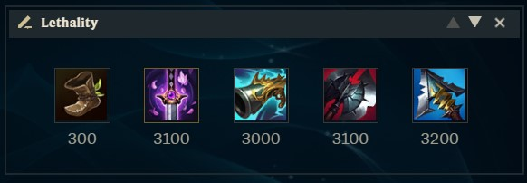
Build bị nerf nặng nhất trên Graves, do Nguyệt đao mất Hút máu toàn phần. Quan điểm của mình là Graves sát lực bắt buộc phải mua Rìu mãng xà để farm bình thường.
Negan
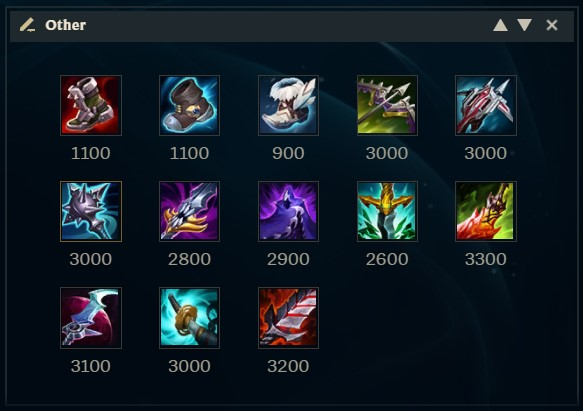
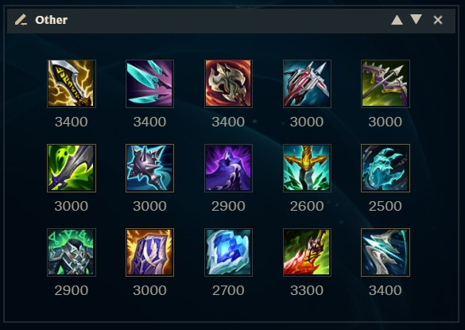
Tên bắt nguồn từ nhân vật Negan Smith trong The Walking Dead, do streamer LS (?) đặt cho build này. Khi mới xuất hiện, build này tập trung xoay quanh các item hút máu. Ở thời điểm hiện tại (mùa 13), Rìu đen theo mình là item quá quan trọng cho Graves. Có thể delay Rìu đen xuống món 2-3, hoặc lên sau Bó tên ánh sáng.
Crit dmg của Graves được buff ở bản 13.7, cho phép Graves có thể lại mua Vô cực kiếm. Tuy nhiên, bạn cần có thêm các món crit để tối đa hoá nội tại tăng 35% crit dmg. Navori là item rất thú vị, đáng cân nhắc vì cả 3 chiêu cơ bản đều rất quan trọng với Graves.
Chuỳ hấp huyết
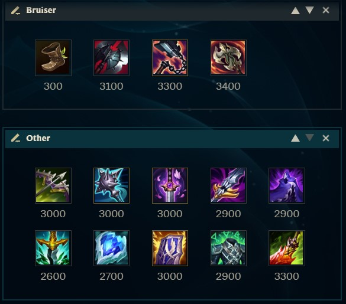
Streamer Tarzaned (NA) là người đầu tiên lên build này theo trí nhớ của mình. Điểm mạnh nhất của build là, khi kết hợp với Rìu đen, cho Graves 700 máu, 8% hút máu toàn phần, nội tại kích hoạt hồi máu và rất nhiều hồi chiêu. Dùng build này khi đối phương có nhiều sát thủ, hoặc khi trong team đã có tướng carry để bạn có thể hy sinh dmg và lên build này.
Hecarim 13.8
Bảng ngọc
Quan điểm cá nhân của mình là không nên lấy Tăng tốc pha do Hecarim cần ưu tiên dmg.
Item
Mình nghĩ không cần giải thích quá nhiều về Rìu đen. Hecarim cần một món dmg nữa để khai thác nội tại giảm giáp, và Manamune theo mình là lựa chọn tốt nhất. 5 lựa chọn đồ thần thoại gồm:
- Ngọn đuốc thánh quang: ổn cho mọi trường hợp, tốt nhất khi team có nhiều tướng lao vào để tận dụng tốt nội tại
- Jak'sho: tốt nhất khi đối phương có nhiều tướng poke, giúp kích hoạt Jak'sho trước khi lao vào
- Chuỳ hấp huyết: counter sát thủ
- Chuỳ phản kích: giữ chân các tướng carry cơ động thấp (Ashe, Jinx, Aphelios,...)
- Búa rìu sát thần: cần thêm dmg giết tank
Jhin 13.8
Mình đã viết giữa chừng 1 bài về Jhin, nhưng thực sự con tướng này quá vô dụng =)))). Nếu pro play pick lại Jhin thì có thể mình sẽ viết.
Kai'Sa 13.8
Bài này tập trung về build on-hit, một build ít được nhiều người để ý
Bảng ngọc
Nhịp độ chết người tất nhiên sẽ là bảng ngọc nhiều DPS nhất. Nhưng có thể cân nhắc Mưa kiếm với các lane khó.
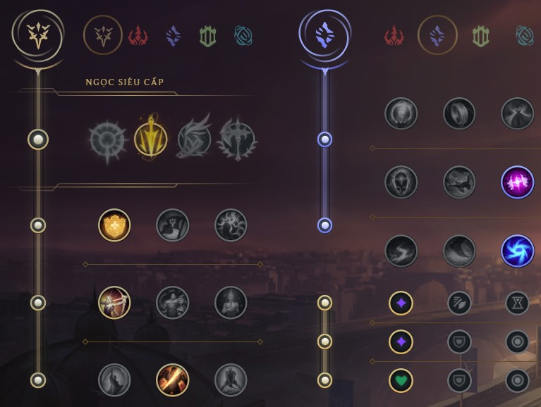
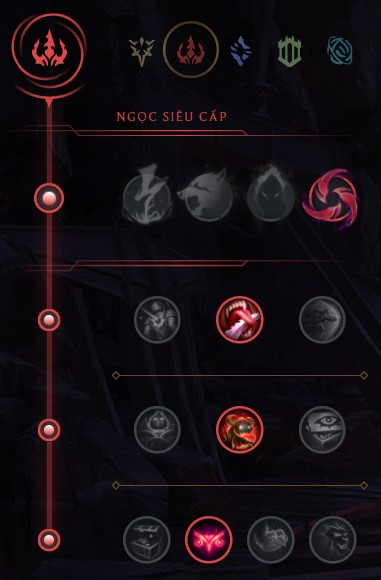
Item
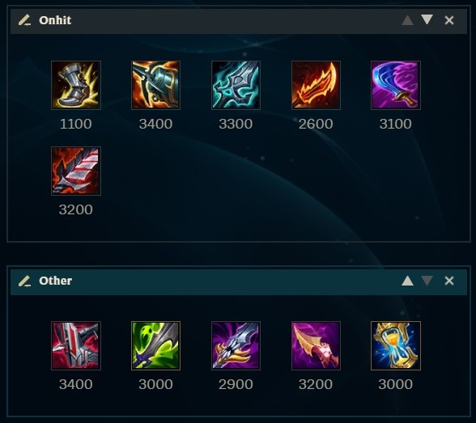
Các build hiện tại của Kai'Sa lên nhiều AD để tập trung burst các tướng yếu máu. Build on-hit có DPS cao hơn, dmg lai giữa AD, AP và sát thương chuẩn, khiến đối phương rất khó đối phó. Tác dụng chính của build này là chống tank.
Kalista 13.8
Bảng ngọc
Một trong số những con tướng muốn chết nhất game. Vị máu + Thu thập nhãn cầu hoặc Kiểm soát điều kiện + Lan tràn là phù hợp nhất với lối chơi này. Lấy Huyền thoại: Kháng hiệu ứng khi hỗ trợ đối phương là Leona, Nautilus, Morgana,...
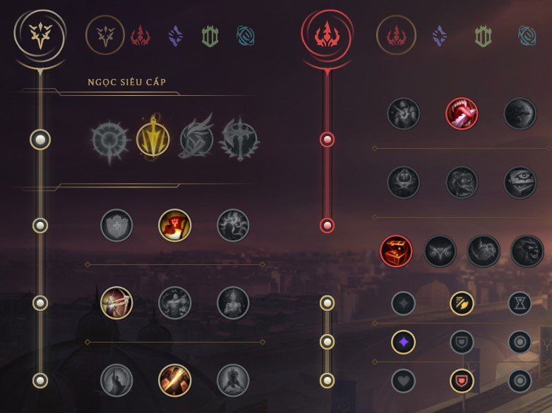
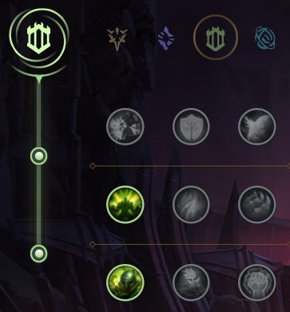
Item
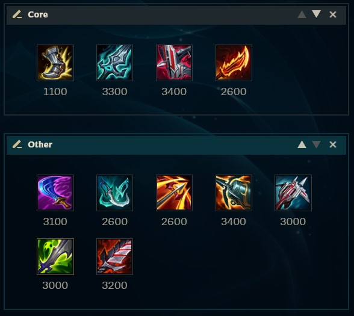
Gươm Suy Vong: Mình đọc đi đọc lại món đồ này mà vẫn không hiểu tại sao không ai lên món này cho Kalista. Gươm Suy Vong và Kalista thật sự là một cặp trời sinh: cần snowball, gây sát thương lớn khi bắt đầu combat (%HP hiện tại) sau đó kết liễu bằng rút giáo, tăng tốc độ chạy, hút máu,... Món đồ rush mạnh nhất cho Kalista. Guinsoo: Đôi lúc trong các game của mình, có người không lên Guinsoo. Đây là item nhiều dmg nhất trên Kalista, không có ngoại lệ nào.
Lucian 13.8
Một vị tướng có lối chơi khá độc đáo. Có rất nhiều cách build khác nhau cho Lucian, nhưng thường nhiều người chỉ sử dụng mặc định 1 build duy nhất. Hy vọng bài này sẽ giúp bạn nhận ra nhiều lựa chọn hơn.
PS: Lucian Milio hiện đang là 1 trong những combo lỗi nhất game (13.8).
Bảng ngọc
Không bánh quy
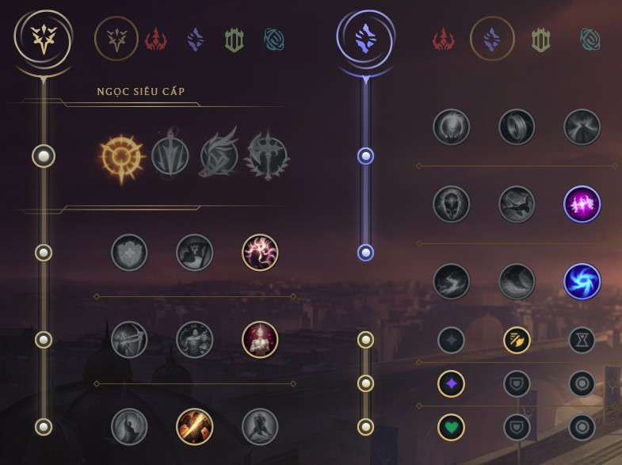
Item
Các build sau đây chỉ là một vài mẫu nhất định. Cách tốt nhất để build Lucian là thích ứng theo từng game.
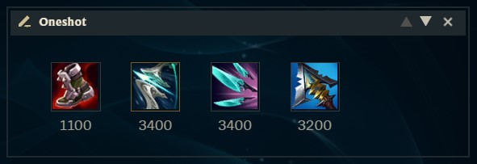
Khi combo với một tướng hỗ trợ trong bộ ba Nami, Sona, Milio, đây là build burst mạnh nhất. Navori rất mạnh trên Lucian, và đặc biệt mạnh cho những bạn biết huỷ động tác nội tại với E.
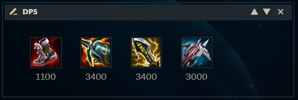
Build này hiển nhiên được dùng để chống tank, DPS cao nhất cho các đòn đánh thường.
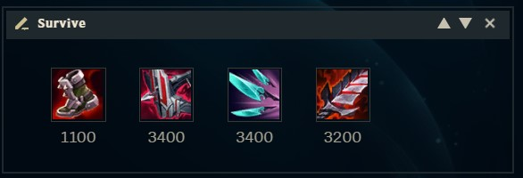
Thường thì mình sẽ không pick Lucian trước rồi để bị counter. Tuy nhiên, khi gặp quá nhiều tướng engage, có thể cân nhắc Nỏ tử thủ. Đương nhiên, lên item này hy sinh rất nhiều dmg, nên chỉ lên khi bạn chơi cùng bộ ba hỗ trợ để có thêm dmg.
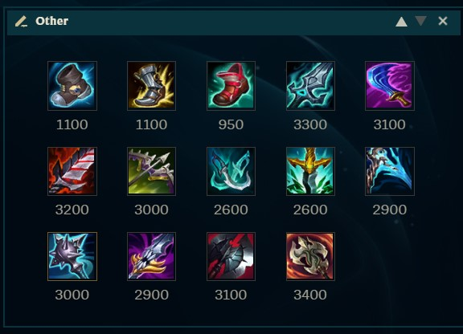
Lux hỗ trợ 13.8
Bài này chỉ nói về Lux hỗ trợ, hoàn toàn không liên quan đến Lux đường giữa.
Bảng ngọc
Đây là bảng ngọc gây nhiều dmg nhất cho Lux. Có thể tuỳ chỉnh các ngọc phụ cho phù hợp với game khi cần
Item
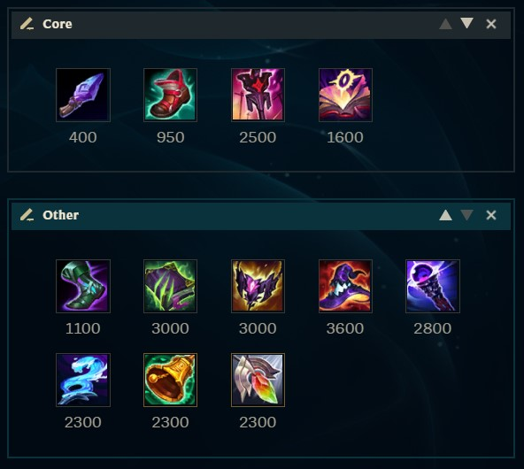
Chỉ có một món đồ thần thoại duy nhất đúng cho Lux hỗ trợ, đó là Trát lệnh đế vương. Lý do:
- Rẻ hơn 700g
- Cho AP nhiều ngang với Luden
- Nội tại tương tác với Q và E
- 200 HP
- Tăng MS
Nếu cần một món đồ hỗ trợ khác (Shurelya, Trượng băng vĩnh cửu, Solari,... ), tốt nhất nên pick tướng khác có thể sử dụng tốt các món này hơn.
Miss Fortune 13.8
Lại một AD khác có đa dạng các build, luôn luôn ở tier S trở lên trong mọi meta từ năm 2021.
Bảng ngọc
Sẵn sàng tấn công là lựa chọn tốt nhất cho Crit MF. MF thông thường không cần đến 6 AA để hạ các carry đối phương.
Trong các game có sát thủ, có thể kết hợp nhánh Kiên định với Nỏ tử thủ.
Bảng ngọc chính cho build Sát lực, tập trung vào poke và chiêu cuối.
Bảng ngọc dành cho MF AP.
Có một con tướng miễn nhiễm với poke ở đường dưới, đó là Jhin (Bước chân thần tốc, Giày + 4 bình máu, MS cao,...). Đặc biệt trong lane này, chuyển sang Đòn phủ đầu và chơi full scaling (tập trung hoàn toàn cho mid/late game).
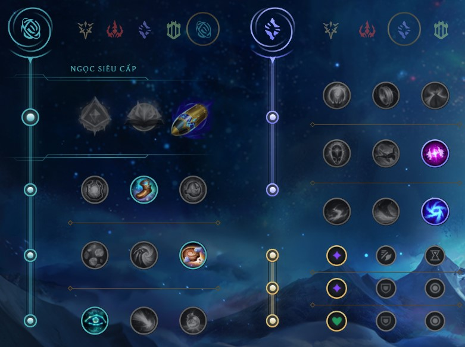
Item
Crit
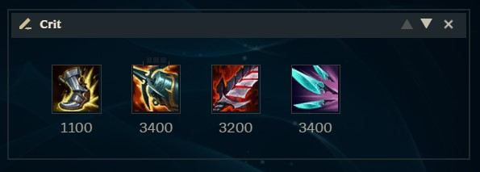
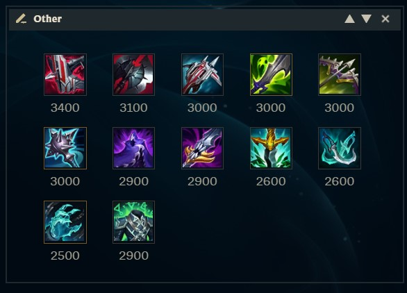
Huyết kiếm hút máu trên cả nội tại của MF. Đây là món đồ huyền thoại mạnh nhất có thể mua.
Khi có đủ AS, Navori có thể cho MF Q mỗi 1.5s. Item này out DPS Vô cực kiếm. Nguồn ảnh: mnogi
Như đã nói ở trên, đổi sang Nỏ tử thủ khi gặp quá nhiều sát thủ. Build này khá giống Negan Graves.
Sát lực
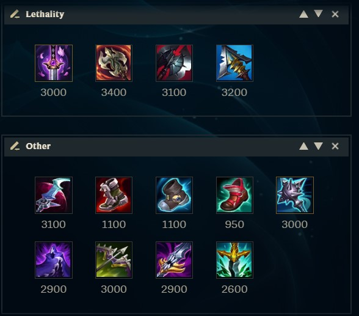
Kiếm ma Youmuu cung cấp quá nhiều MS, cho phép ta bỏ qua cả Giày và tiết kiệm ~1k vàng cho đồ lớn.
Tương tự như Graves sát lực, việc Nguyệt đao bị nerf khiến MF phải dùng Rìu mãng xà để farm và hút máu. Rìu đen stack trên từng phát đạn của chiêu cuối.
PS: do chiêu cuối rất dễ né, hiện tại build này đang bị thất sủng.
Liandry + AD
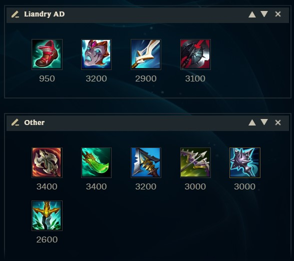
Tiền thân của build AP. Build này khai thác 2 yếu tố chính:
- E kích hoạt Liandry, Thiên thạch bí ẩn, Thiêu rụi, Phát bắn đơn giản
- Nhiều hồi chiêu, giúp E nhiều hơn
- Sau Liandry cần lên AD để có thể dùng chiêu cuối
AP
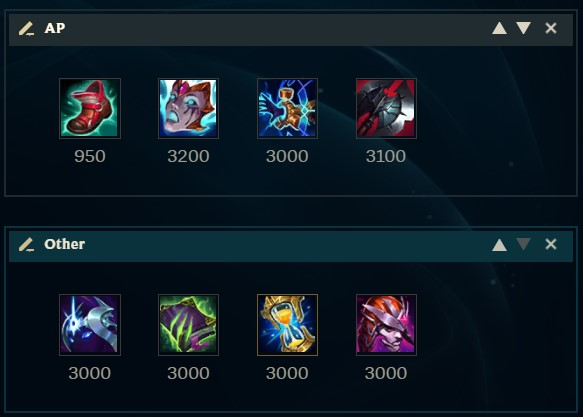
Bản 12.21 buff AP scale của chiêu E. Từ bản này, mình không còn dùng build Liandry ở trên nữa. Động cơ vũ trụ nếu cần thêm slow, và Trượng Hư vô nếu cần dmg. Mũ trụ nguyền rủa: chỉ mua khi đối phương có rất nhiều HP (Sion, Cho'gath, Zac,...). Lưu ý: tác dụng chính của build AP là đa dạng hoá nguồn dmg, chỉ sử dụng khi team không có AP/khi đi hỗ trợ.
Nilah 13.8
Một trong những tướng tiệm cận với tier S nhưng đang bị hãm lại bởi Jinx và Xayah (13.8)
Bảng ngọc
Nilah là tướng rất phụ thuộc vào chỉ số crit, vì vậy có thể lấy Thợ săn tiền thưởng để giúp Nilah stack 100% crit càng nhanh càng tốt.
Một nhánh phụ khác có thể lấy là Kiên định, với Kiểm soát điều kiện và Tiếp sức
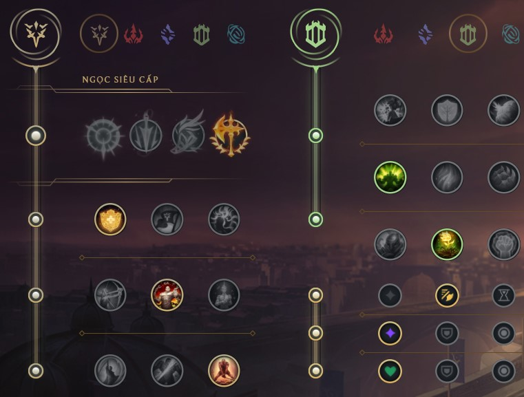
Item
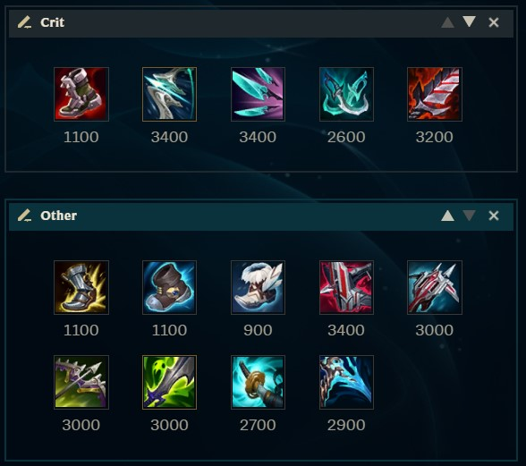
Cung phong linh: Trang bị thần thoại phù hợp nhất, giúp Nilah dễ tiếp cận AD đối phương. Đoản đao Navori: Item tier S+ dành cho Nilah, Nilah rất cần sử dụng skill trong combat. Ma vũ song kiếm: Lại một trang bị hoàn hảo khác cho Nilah, cung cấp gần như tất cả chỉ số cần thiết.
PS: Mình có biết tới 1 build Nilah đi top, nhưng thực sự hiện tại mình chưa tin lắm =))) Nếu có thay đổi ý kiến thì sẽ update ngay.
Senna 13.8
Một trong những build lạ nhất của cả trang web này.
Bảng ngọc
Bước chân thần tốc là lựa chọn ổn định nhất, phù hợp với cách trade của Senna trong lúc đi lane và cách giữ vị trí, gây dmg trong phần còn lại. Với những người mới chơi Senna thì nên lấy ngọc này 100% game.
2 ngọc then chốt còn lại (không phải Chinh phục) phát huy tác dụng trong một vài trường hợp rất nhất định.
Senna scale quá tốt với AD (do nội tại), gần như luôn luôn lấy nhánh Pháp thuật để có nhiều AD nhất.
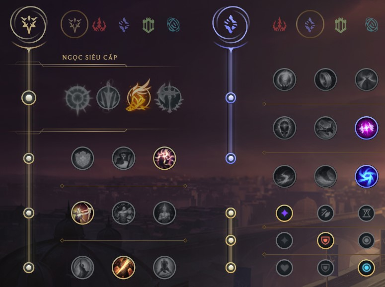
Item
1113p
Giày thép gai: Từ khoảng 2 năm trở lại, tất cả Senna mặc định lên Giày bạc.
Lý do lớn nhất mà mọi người có thể nghĩ ra là chạy nhanh để "giữ vị trí, né chiêu".
Không có AD nào không cần giữ vị trí, tại sao không có AD nào khác lên Giày bạc?
Thay vì lên thêm 15 MS và tin vào khả năng phản xạ của bản thân, thì một cách tư duy tốt hơn là lên thẳng giáp, để ngay cả khi trúng chiêu vẫn không nhận nhiều dmg.
Mình rush giày 2 trong tất cả game Senna, vì các pha trade đầu game với Senna hầu như chỉ dừng lại ở farm linh hồn, nên mình muốn MS và chống chịu để lui về an toàn nhất.
Đối với một vài game nhất định, Senna sẽ cần lên Giày thuỷ ngân.
Fasting Senna
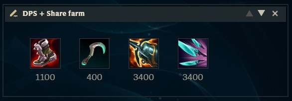
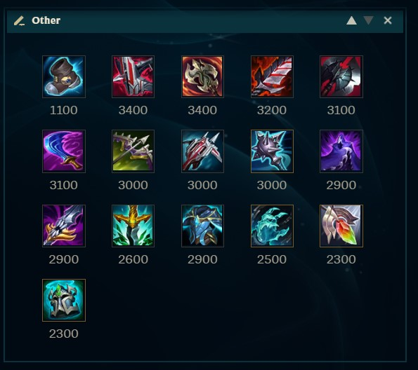
2 món carry tốt nhất cho Senna là Móc diệt thuỷ quái và Navori. Cân nhắc Nỏ tử thủ, Huyết kiếm và cả các món tank nếu cần thiết.
Support Senna
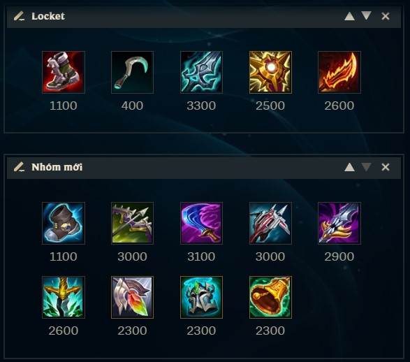
Solari: giải thích tương đối dài dòng. Tất cả mọi người đều biết thừa rằng điểm yếu lớn nhất của Senna là quá mỏng, cực kỳ dễ chết khi bị engage. Hơn nữa, do thường được đánh ở vị trí hỗ trợ (cho 1 AD khác), cả 2 đều trở thành miếng mồi cho đối phương. Chỉ cần thua một chút, và để AD đối phương có lợi thế, Senna và AD của mình sẽ thành mục tiêu dive liên tục. Hầu như các tướng lao vào đều không thể vượt qua lớp khiên của Solari. Thời gian hồi 90s ngắn hơn đa số chiêu cuối của các tướng ở giai đoạn 1 đồ. Cộng thêm 200 HP, 30 giáp và 30 kháng phép, Senna trở nên rất khó bị hạ gục, nhưng vẫn gây sát thương tốt nhờ lượng sát thương cơ bản rất cao ở chiêu Q và nội tại. Một điểm nữa cần lưu ý là Solari khá giống với các lựa chọn Bước chân thần tốc cũng như Giày thép gai, đều giảm thiểu thiệt hại và rủi ro khi Senna bước lên trade trong lane để farm linh hồn. Móc diệt thuỷ quái: Giả sử như đối phương không có tướng lao vào, hoặc bạn đang có quá nhiều lợi thế và thực sự không cần đến Solari, thì có thể lựa chọn item này để gây nhiều DPS nhất trong combat. Gươm Suy Vong: Do không được farm giống như các AD khác, Senna cần lên những món đồ mạnh nhất 1 cách độc lập. Gươm Suy Vong không chỉ gây dmg ổn định, mà còn cung cấp hút máu, tương tác rất tốt với Solari. Guinsoo: Do không được farm, Guinsoo là lựa chọn tốt hơn dành cho Senna hỗ trợ so với Navori (rẻ hơn 700g). Có thể swap lại ở món 6.
Câu hỏi thường gặp: Tại sao lại không mua...
Sát lực? Troll :). Sát lực tăng giá trị theo level, và không phải là lựa chọn dành cho vai trò có level thấp nhất trong game. SKill của Senna đều có thời gian hồi rất lâu nếu thiếu AS, nên Senna cũng không hưởng lợi quá nhiều từ việc mua Sát lực. Đại bác liên thanh? Vô dụng. Nếu farm linh hồn đúng cách, Senna rất dễ dàng đạt tầm đánh 650+ vào cuối game. Dmg và on-hit luôn là những lựa chọn tốt hơn, thay cho việc tăng tầm đánh mỗi 4-5 (100 stack Tích Điện). Trái tim khổng thần? Mình không còn lời nào để nói :(. Học cách người Hàn chơi game, không phải cách người Hàn build. Still <3 Keria.
Udyr 13.8
Udyr có 2 lối chơi chính là max R (Phượng hoàng) và max Q (Gấu). Bài này sẽ cố gắng phân tích cả 2 lối chơi, nhiều ý tưởng đến từ streamer Aribo (EUW).
Bảng ngọc
Udyr có lối chơi khá tương đồng với Hecarim nên cũng có bảng ngọc khá giống.
Đối với Udyr top, có thể sử dụng Sẵn sàng tấn công để hỗ trợ burst cho Gấu, hoặc Quyền năng bất diệt khi build tank Phượng hoàng.
Item
Phượng hoàng
AOE và làm chậm xung quanh, thích hợp cho các game thiếu AP hoặc có nhiều melee.
Giày bạc: Do lối chơi của Udyr, MS là một trong những chỉ số quan trọng nhất. Chỉ nên đổi sang Giày thép gai hoặc Giày thuỷ ngân trong những game thực sự có tác dụng lớn.
Nên mua Phong ấn hắc ám để có cơ hội nâng cấp thành Mejai. Mejai không chỉ có AP mà còn cho 100 HP và 10% MS cộng thêm, tất cả chỉ với 1600g. Mũ trụ nguyền rủa: Core item trong các build lên đồ thần thoại tank. Hãy nhớ, đối với Udyr, AP không chỉ là dmg mà còn là chống chịu thông qua lớp khiên W, và chúng ta luôn max W 2nd. Lượng dmg từ item này giúp Udyr clear rừng và solo rồng, sứ giả nhanh hơn nhiều. Đặc biệt, từ sau khi được rework, Udyr có thể kích hoạt nâng cấp R (skill nhiều dmg nhất) từ khoảng cách rất xa. Jak'sho: Có lẽ là món thần thoại phù hợp nhất dành cho Udyr. Không giống như các tướng khác, cách engage của Udyr đơn giản là chạy bộ vào, nên rất dễ bị đối phương poke và kích hoạt Jak'sho.
Ở phiên bản 13.7, Động cơ vũ trụ vừa được buff. Đây là một món đồ khá phù hợp cho Udyr, giúp bắt kịp các tướng đánh xa.
Điểm yếu lớn nhất của lối lên đồ ở trên là có 2 core item. Trong một vài game, bạn sẽ cần phải có 2 món tank thần thoại để counter một vài tướng cụ thể. Ví dụ: team đối phương có Jax, Cassiopeia và Kog'maw. Sẽ là lợi thế rất lớn trong các pha combat nếu như bạn có thể lên Tim băng và Giáp thiên nhiên. Nếu như lên đồ theo build bên trên, 2 món này sẽ lần lượt đẩy xuống 3 và 4, và có thể khiến bạn thua các pha combat mid game.
Để khắc phục vấn đề này, chúng ta có thể sử dụng 2 món đồ thần thoại khác là Tam hợp kiếm (tăng MS, bắt kịp các tướng đánh xa) và Búa rìu sát thần (chống tank, hồi máu giữa combat). Udyr sử dụng rất tốt Thuỷ kiếm, giúp việc clear rừng ở đồ đầu tiên nhanh hơn, và 1v1 tốt hơn.
Gấu
- Chuỳ hấp huyết: counter các sát thủ, hoặc những tướng đánh gần ít HP. Các trang bị thành phần của item này rất mạnh, phù hợp cho việc snowball đầu game.
- Chuỳ phản kích: giữ chân các tướng đánh xa
- Búa rìu sát thần: out dmg 2 món trên nếu như đối phương mua nhiều HP.
Udyr cần thêm một món huyền thoại có AD để có đủ dmg. Lựa chọn số 1 với mình ở phiên bản hiện tại là Rìu đen. Rìu mãng xà: phù hợp cho Udyr top với hút máu, nhiều AD, clear lính, giúp 1v1 và đẩy lẻ tốt hơn.
Vayne 13.8
Không hẳn là build mới, chỉ nói về một vài thứ có thể nhiều người không biết.
Bảng ngọc
Vayne đã có đủ DPS với W, nên lấy nhánh Kiên định để sống sót tốt hơn.
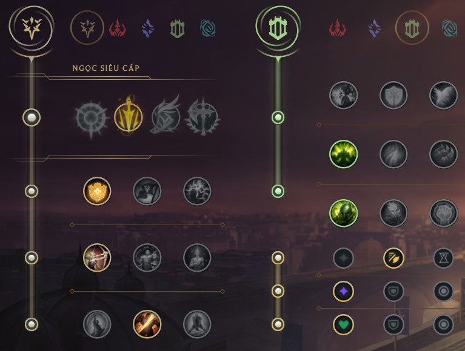
Item
Mặc định lên Guinsoo, chậm nhất là món 3, đừng nghe ai nói khác. Ma vũ song kiếm và Đao tím là 2 món đồ huyền thoại mạnh nhất trên Vayne xét về DPS. Gươm Suy vong ít dmg hơn cả 2 món trên với các mục tiêu < 3200 HP, và không cung cấp gì khác ngoài dmg (ta không cần đến hút máu do đã có Nỏ tử thủ và Huyết kiếm). Không bao giờ lên món này.
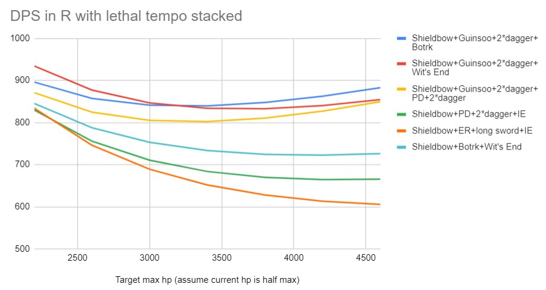 Nguồn ảnh: mnogi
PS: Từ sau bản 13.7, Vayne max Q rồi tới W.
TheVoices (Yasuo & Yone) 13.8
Nhà tài trợ chính cho build này là Dzukill (EUW), một trong những 2-trick anh em gió hay nhất thế giới.
Dzukill bắt đầu sử dụng build này từ khoảng tháng 3/2023. Hiện tại, nếu vào opgg của Dzukill sẽ thấy anh đã chuyển sang build khác, nhưng mình nghĩ vẫn đáng để giới thiệu.
Bảng ngọc
Bảng mặc định: Nhịp độ chết người và Kiên định. Thay đổi các ngọc ở nhánh phụ tuỳ theo lane.
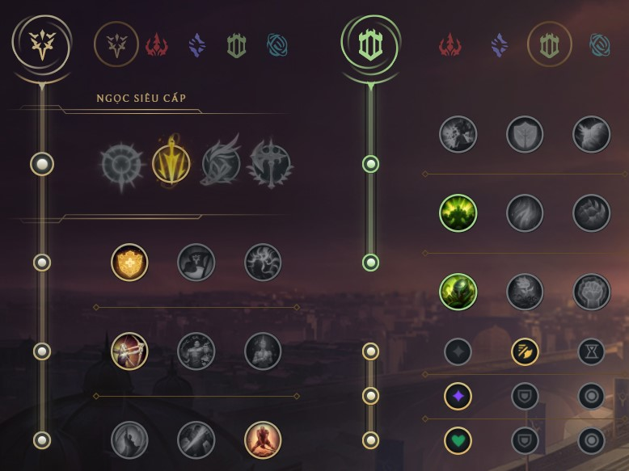
Item
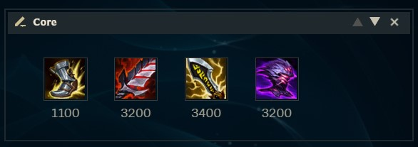
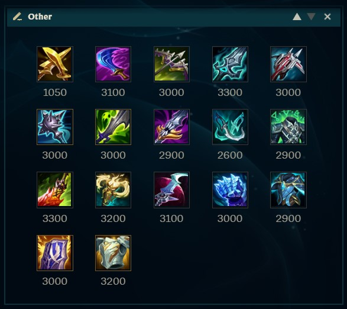
Ý tưởng chính của build này là thay thế Nỏ tử thủ bằng Huyết kiếm. Việc này cho phép TheVoices mua các món thần thoại khác, các món chính là Jak'sho, Ngọn đuốc thánh quang, Găng tay băng giá, Nguyệt đao.